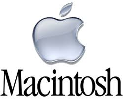
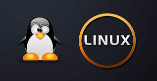

WINDOS 7
contenido
Es una versión de Microsoft Windows, línea de sistemas operativos producida por Microsoft Corporation. Esta versión está diseñada para uso en PC, incluyendo equipos de escritorio en hogares y oficinas, equipos portátiles, tabletas, netbooks y equipos multimedia.2 El desarrollo de Windows 7 se completó el 22 de julio de 2009, siendo entonces confirmada su fecha de venta oficial para el 22 de octubre de 2009 junto a su equivalente para servidores Windows Server 2008 R2.3 En febrero de 2018, tenía una cuota de mercado de 41,51 %, y fue superado por Windows 10 que ya tenía un 43,95 % de la cuota de mercado.4
A diferencia del gran salto arquitectónico y de características que sufrió su antecesor Windows Vista con respecto a Windows XP, Windows 7 fue concebido como una actualización incremental y focalizada de Vista y su núcleo NT 6.0, lo que permitió mantener cierto grado de compatibilidad con aplicaciones y hardware en los que este ya era compatible.5 Sin embargo, entre las metas de desarrollo para Windows 7 se dio importancia a mejorar su interfaz para volverla más accesible al usuario e incluir nuevas características que permitieran hacer tareas de una manera más fácil y rápida, al mismo tiempo que se realizarían esfuerzos para lograr un sistema más ligero, estable y rápido.6

WINDOS 8
contenido
Es una versión de Microsoft Windows, línea de sistemas operativos desarrollada por Microsoft para su uso en ordenadores personales, incluidas computadoras de escritorio en casa y de negocios, computadoras portátiles, netbooks, tabletas, servidores y centros multimedia. El principal cambio es la polémica decisión de eliminar Menú Inicio, existente desde Windows 95 como estándar de facto en cómo presentar aplicaciones en interfaces gráficas. El 2 de abril de 2014, Microsoft reconoció el error de la eliminación del menú de inicio y anunció que lo volverían a implementar en la siguiente versión de Windows,3 el cual llegó en 2015.4
Añade soporte para microprocesadores ARM, además de los microprocesadores tradicionales x86 de Intel y AMD. Su interfaz de usuario ha sido modificada para hacerla más adecuada para su uso con pantallas táctiles, además de los tradicionales ratón y teclado. El efecto Aero Glass de su predecesor Windows 7 no está presente en este sistema operativo, siendo reemplazado por nuevos efectos planos para ventanas y botones con un color simple.
El 18 de octubre de 2013, Microsoft lanzó una actualización gratuita al sistema: Windows 8.1. Mientras que el 29 de julio de 2015, presentó su sucesor, Windows 10, orientado a integrar de una mejor forma el sistema operativo en todos los dispositivos, desde ordenadores, tabletas y hasta teléfonos inteligentes, destacando el regreso de uno de sus elementos más característicos, el ausente Menú Inicio.
google

WINDOS 10
contenido
es el vigente sistema operativo desarrollado por Microsoft como parte de la familia de sistemas operativos Windows NT.6 Fue dado a conocer oficialmente en septiembre de 2014, seguido por una breve presentación de demostración en la conferencia Build 2014. Entró en fase beta de prueba en octubre de 2014 y fue lanzado al público en general el 29 de julio de 2015.Esta edición introdujo una arquitectura de aplicaciones «universales». Desarrolladas con la interfaz Continuum y, posteriormente, con la interfaz Fluent Design, estas aplicaciones pueden ser diseñadas para ejecutarse en todas las familias de productos de Microsoft con un código casi idéntico (incluyendo computadoras personales, tabletas, teléfonos inteligentes, sistemas embebidos, Xbox One, Surface Hub y HoloLens). La interfaz de usuario fue revisada para realizar transiciones entre una interfaz orientada al ratón y una interfaz orientada a la pantalla táctil basadas en dispositivos de entrada disponibles (particularmente en tabletas). Ambas interfaces incluyen un menú Inicio actualizado que comprende un diseño mezclado de Windows 7 con el diseño metro de Windows 8. También se introduce la Vista de Tareas, un sistema de escritorio virtual, el navegador web Microsoft Edge y otras aplicaciones nuevas o actualizadas, un soporte integrado para iniciar sesión a través de huella digital o reconocimiento facial llamado Windows Hello, nuevas características de seguridad para entornos empresariales, DirectX 12 y WDDM 2.0 para mejorar las capacidades gráficas del sistema operativo para los videojuegos.

MAC
contenido
Mac OS (del inglés Macintosh Operating System, en español Sistema Operativo de Macintosh) es el nombre del sistema operativo creado por Apple para su línea de computadoras Macintosh, también aplicado retroactivamente a las versiones anteriores a System 7.6, y que apareció por primera vez en System 7.5.1. Es conocido por haber sido uno de los primeros sistemas dirigidos al gran público en contar con una interfaz gráfica compuesta por la interacción del mouse con ventanas, iconos y menús.
Deliberada a la existencia del sistema operativo en los primeros años de su línea Macintosh en favor de que la máquina resultara más agradable al usuario, diferenciándolo de otros sistemas contemporáneos, como MS-DOS, que eran un desafío técnico. El equipo de desarrollo del Mac OS original incluía a Bill Atkinson, Jef Raskin y Andy Hertzfeld.
Este fue el comienzo del Mac OS clásico, desarrollado íntegramente por Apple, cuya primera versión vio la luz en 1985. Su desarrollo se extendería hasta la versión 9 del sistema, lanzada en 1999. A partir de la versión 10 (Mac OS X), el sistema cambió su arquitectura totalmente y pasó a basarse en Unix, sin embargo su interfaz gráfica mantiene muchos elementos de las versiones anteriores.

LINUX
contenido
GNU/Linux es un conjunto de sistemas operativos libres multiplataforma, multiusuario y multitarea basados en Unix. El sistema es la combinación de varios proyectos, entre los cuales destacan GNU, encabezado por Richard Stallman y la Free Software Foundation junto con el núcleo o kernel «Linux», programado por Linus Torvalds. Su desarrollo es uno de los ejemplos más prominentes de software libre: todo su código fuente puede ser utilizado, modificado y redistribuido libremente por cualquiera, bajo los términos de la licencia GPL ─Licencia Pública General de GNU─ y otra serie de licencias libres. A pesar de que el vocablo «Linux» se utiliza en la jerga cotidiana para referirse a un sistema operativo,23 en realidad ese es solo el nombre del kernel o núcleo del sistema. La idea de hacer un sistema completo se remonta a mediados de la década de 1980 con el proyecto GNU, así como una gran cantidad de los componentes que se usan hoy en día ─además del núcleo─, que van desde los compiladores de GNU hasta entornos de escritorio.4 Sin embargo, tras la aparición de Linux en la década de 1990 una parte significativa de los medios generales y especializados han utilizado el término «Linux» para referirse al todo.5 Cabe señalar que existen derivados de Linux que no tienen componentes GNU, así como distribuciones de GNU donde Linux está ausente.
A GNU/Linux se le encuentra normalmente en forma de compendios conocidos como distribuciones o distros a las cuales se les han adicionado selecciones de aplicaciones y programas para descargar e instalar las mismas. El propósito de una distribución es ofrecer GNU/Linux como un producto final que el usuario pueda instalar, cumpliendo con las necesidades de un grupo de usuarios o bien del público general.
Algunas de ellas son especialmente conocidas por su uso en servidores de Internet, supercomputadoras, y sistemas embebidos;6 donde GNU/Linux tiene la cuota más importante de esos mercados. Según un informe de IDC, GNU/Linux es utilizado por el 78% de los principales 500 servidores del mundo.7 Top500.org informa, en su lista de noviembre de 2017, que todas las 500 supercomputadoras más potentes del mundo utilizan Linux.8 Con menor participación, el sistema GNU/Linux también se usa en el segmento de las computadoras de escritorio, portátiles, computadoras de bolsillo, videoconsolas y otros dispositivos.